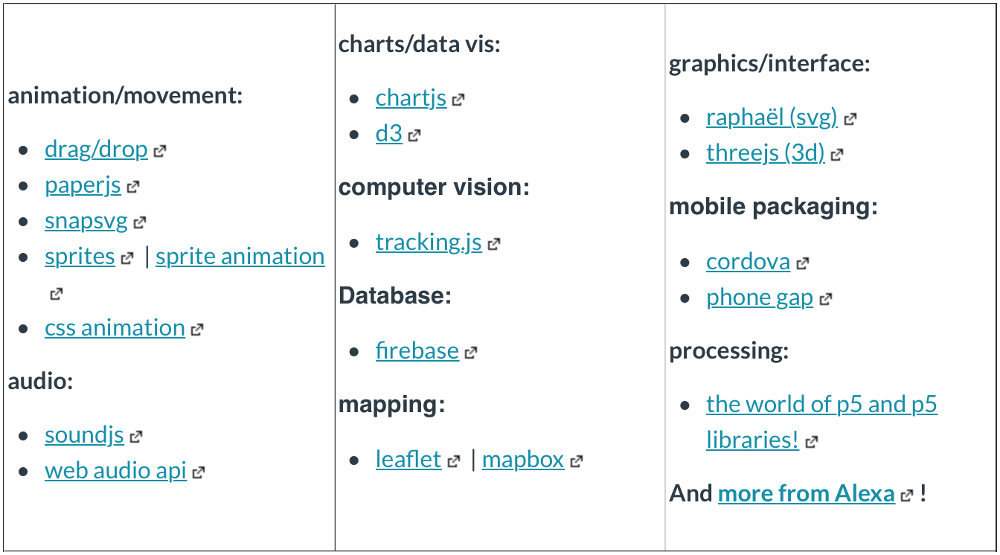
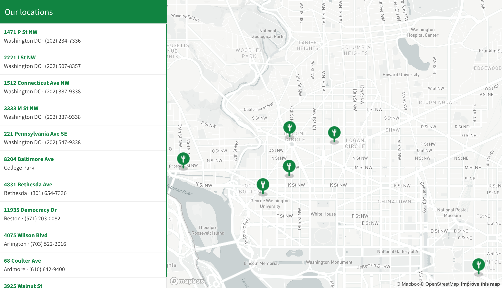
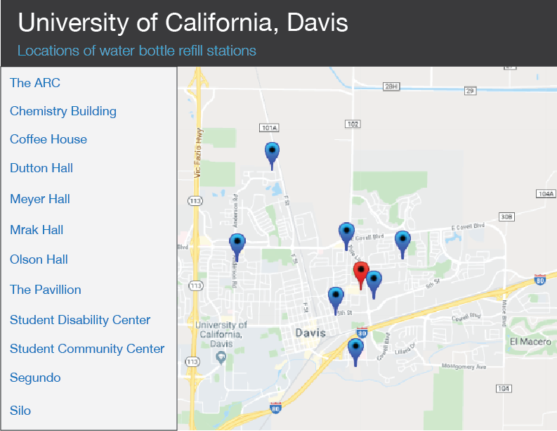
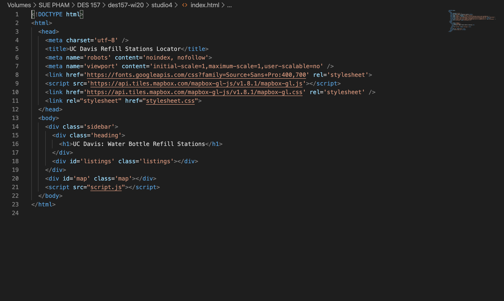
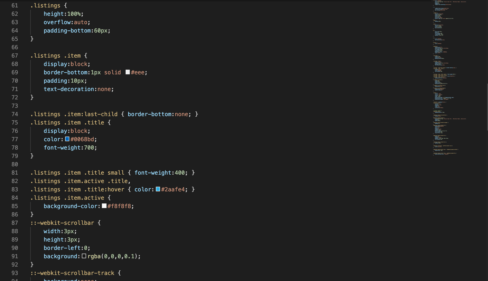
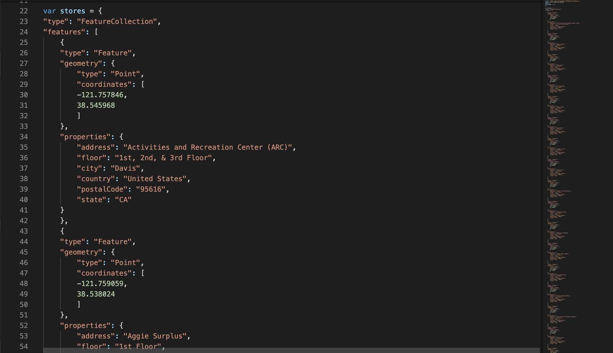
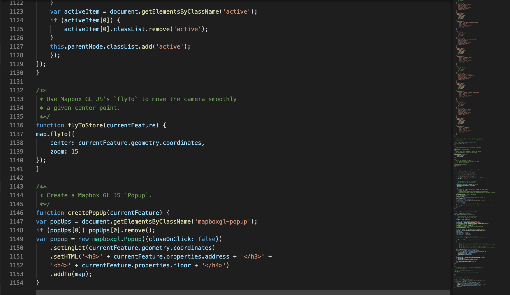

Project Type
Studio Project for DES 157
Role
Web Developer
Skills
Visual Design, Interaction Design, Coding, JavaScript Libraries
Tools
Visual Studio Code, Mapbox, HTML, CSS, JavaScript
Timeline
Feb. 27 - Mar. 5, 2020
(1 week)
Studio Project for DES 157
Web Developer
Visual Design, Interaction Design, Coding, JavaScript Libraries
Visual Studio Code, Mapbox, HTML, CSS, JavaScript
Feb. 27 - Mar. 5, 2020
(1 week)
This assignment was for my JavaScript course at UC Davis. The assignment was to explore JavaScript libraries, API's, or other HTML/CSS methods to make websites more immersive and interactive. I chose to learn and use MapBox to create a locator for hydration stations on the UC Davis campus. MapBox is a JavaScript library for interactive maps that can be customized to your needs. There is a live version of this on the UC Davis Student Health and Counseling Services webpage, but I wanted to try to recreate it with MapBox myself.
Students need access to where hydration station locations are to refill their water bottles and/or drink water while on campus.
Create a website with the buildings and location of the hydration stations on the map for students to see where the stations are.
There were many suggested techniques for us to select, but from the list, I was especially interested in ThreeJS, ChartJS, and Mapbox.

I decided on MapBox because it was something I have never done before, and I wanted to challenge myself with coding.
To learn how to use MapBox, I followed the Store Locator tutorial on their website.
I learned how to:
This was the final product from the tutorial.

This was the basic interface that I wanted to create with Mapbox: the title, locations, and the map.The user could interact with the map by selecting specific buildings to see where the refill stations were, similar to the tutorial layout.

From the tutorial, I used the same structure of HTML, CSS, and JavaScript to customize the Hydration Stations for my map.
The HTML for using MapBox was very minimal, and it only required one heading for the title of the map. I changed my code to say "UC Davis: Water Bottle Refill Stations" to fit my idea.

For the CSS, it was kept the same as the tutorial, but I changed the marker to a water drop. The color scheme was also changed in the CSS.

The data for the locations were placed in the JavaScript file to be used on the map and sidebar. For each location, it asked for the coordinates, and the properties of the location (i.e., address, state, floor). JavaScript was also used to interact with the map by moving the map or clicking on the sidebar.


Using MapBox was easier than I expected when I started because their documentation is clear and understandable. Creating the tutorial helped me understand how to use the basics of the library, and I was then able to customize it to my liking. I learned that JavaScript libraries are helpful to use when coding websites because it only needs to be implemented into your code. It saves a lot of time, and it makes websites more interactive.
The functionality and features on the site are basic. In the future, I would add more details about the location like images and exact descriptions of the location.